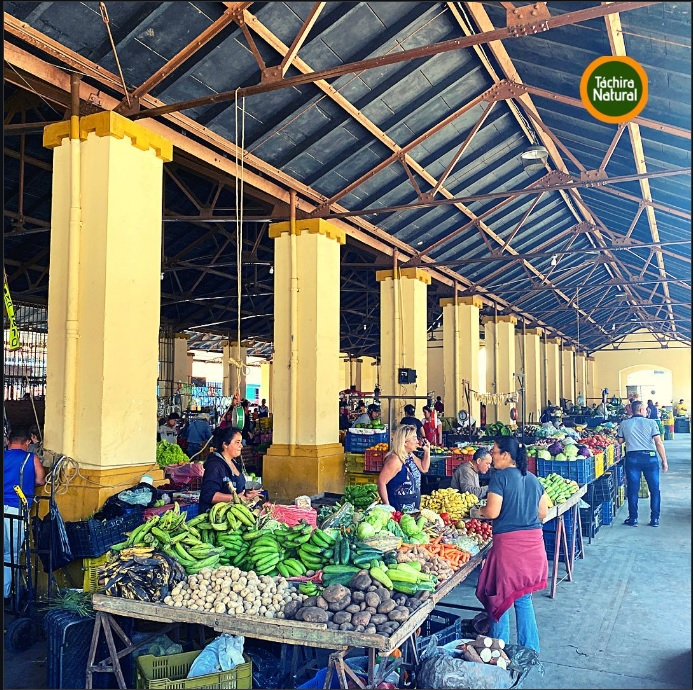

Los Kioscos de Capacho

"Parada tradicional y obligatoria para todos los viajeros en la vía hacia la frontera. Famosos por mantener intacta la receta de los mejores pastelitos y bebidas fermentadas de la región."
Ubicación: Mercado Municipal de Capacho
Horario: Lunes a Domingo 6:00 AM - 4:00 PM
Teléfono: Múltiples locales
🍽️ Especialidades Locales
Lo que no puedes dejar de probar:
🗺️ Ubicación Exacta
Inmediaciones del Mercado Municipal de Capacho, vía principal hacia San Antonio.